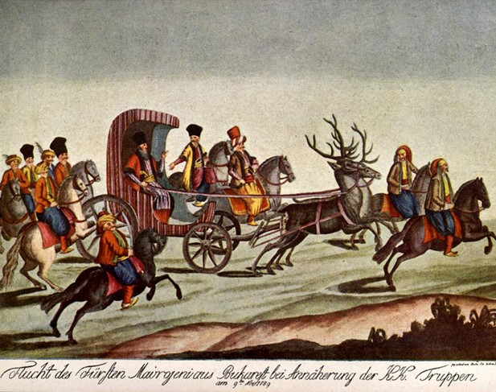
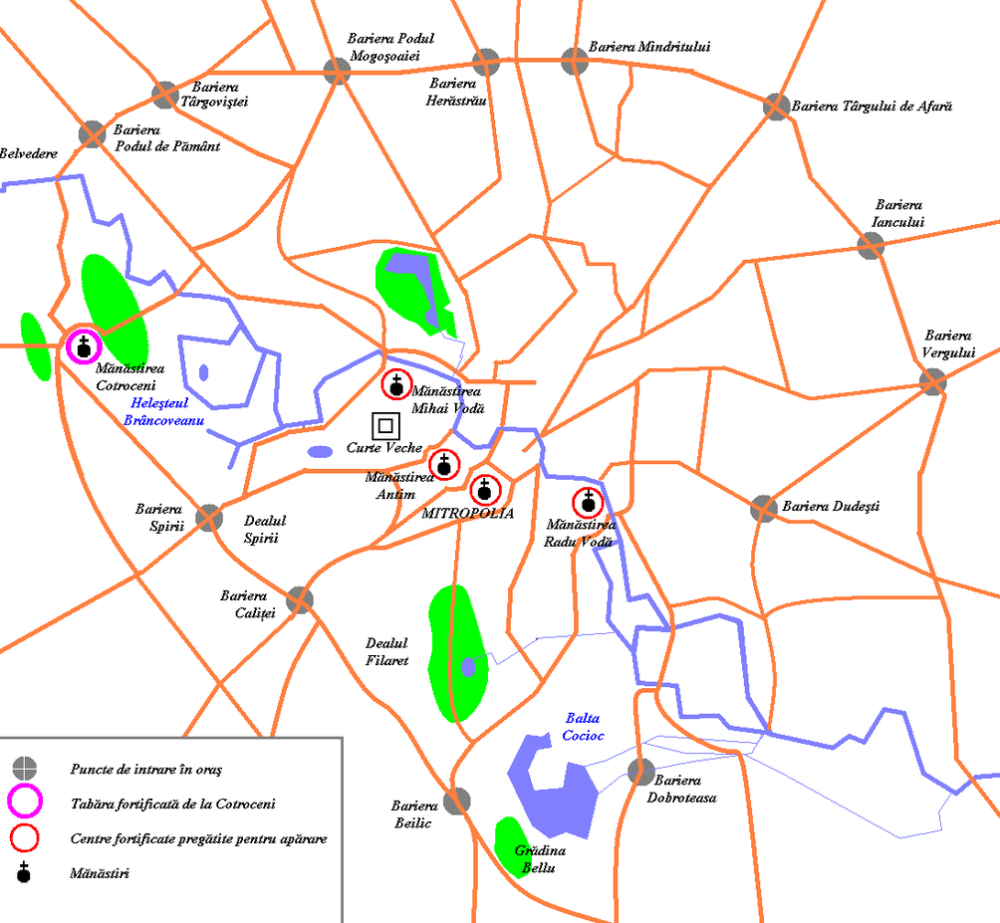
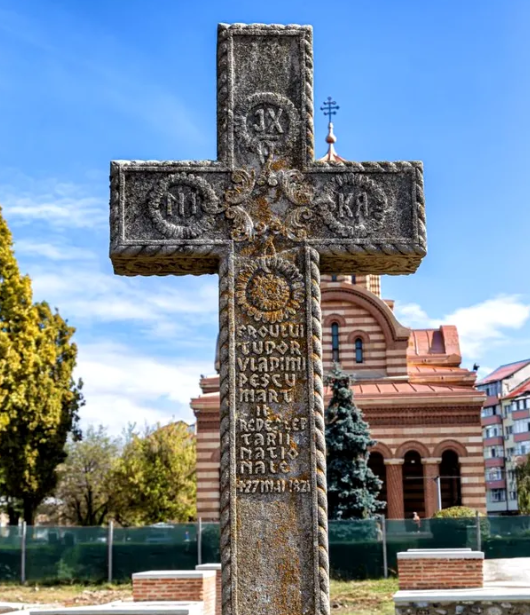

Duminică, 23 ianuarie / 4 februarie 1821,
la Padeș, în prezența a aproximativ 100 de țărani și a
apropiaților săi colaboratori, Tudor Vladimirescu a lansat
chemarea la luptă „întregii omeniri”, care a devenit cunoscută
în istorie drept Proclamația de la Padeș. Era o declarație
capabilă să „miște conștiințe și să îndemne oamenii să lupte”,
o adevărată „declarație de război” împotriva fanarioților.
Proclamația a avut un efect imediat, locuitorii satelor
răspunzând cu miile.

Fanarioții din Muntenia, Călătorind prin
București
Marșul spre București
Pentru a asigura
controlul asupra țării, pandurii au executat
marșul spre București. La 28 februarie/12
martie, două coloane ale armatei
revoluționare românești au plecat
spre capitală. Ele s-au unit la Slatina
o săptămână mai târziu. Ostașii stăpânirii
din tabăra de la Coțofeni – 800 de arnăuți
– s-au alăturat pandurilor, ceea ce ridica
efectivele lui Tudor la aproximativ 8.000
de oameni, 2.000 călare și 6.000 pedeștri.
Regimul lui Tudor
La 21 martie / 2 aprilie 1821, armata
revoluționară condusă de Tudor Vladimirescu a intrat
triumfător în București pe Podul Potirului,
primită de o mulțime entuziastă. Tudor va rămâne stăpân pe
capitală 15 / 27 mai, guvernând țara.
Stabilindu-și sediul în
casele Brâncovei de lângă Mitropolie, preluând în scurt
timp controlul principalelor,
evitând totodată orice conflict cu omul de Eteria din oraș,
Tudor Vladimirescu a încercat să colaboreze cu boierii din oraș.

Bucureștiul în timpul Revoluției de la 1821
Principate
Această acțiune a adus în Principate
după lunga perioadă fanariotă, din nou domni pământeni și
a limitat drepturile boierilor străini.Ioniță Sturdza a
fost numit domn în Moldova iar Grigore Ghica în Muntenia.
După revoluție boierii străini (greci, sârbi, albanezi),
revendicau în continuare conducerea țării pentru ei,
făceau abuzuri și erau încă favorizați de legislație.
Urmări și concluzii
După revoluție, boierii străini
greci, sârbi, albanezi, și-au revendicat în continuare
conducerea țării, au comis abuzuri și au fost în
continuare favorizați de legislație.
Printre cei 13 trimiși s-au numărat logofatul Ioniță Sturdza,
vagonul Gheorge Cuza, vagonul Iordache Râșcanu și banul
Grigore Ghica.
Deși înfrântă, Revoluția din 1821 a marcat trezirea sentimentului
național, a conștientizat necesitatea schimbărilor structurale
sociale, politice și economice, a dus la primii pași de
pregătire a revoluțiilor de la 1848.

Cruce de omagiu, Tudor Vladimirescu
Structura lucrării
Motto
Introducere
Biografie
Contextul Istoric
Tudor Vladimirescu
Programaul Revolutiei
Pregatirea Revolutiei
Oraganizarea militara
Declasarea revolutiei
Regimul lui Tudor
Urmări si Concluzii
Scrise
Revoluția Greacă de la 1821
Autor: Tudor Dinu
Revoluția din 1821 condusă de T.V. Autor: G. D. Iscru